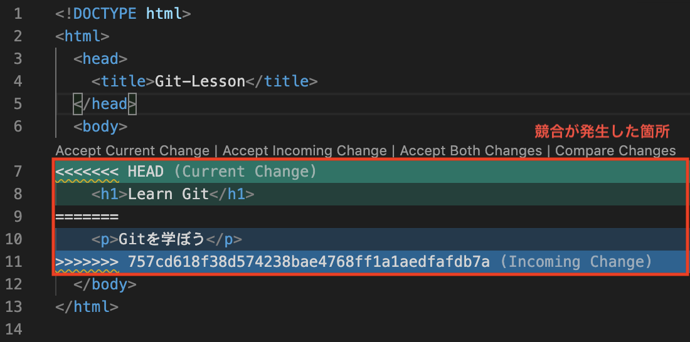

1.初級編
1-1.Gitの基本
Gitとは
プログラムソースなどの変更履歴を管理する分散型バージョン管理システム(詳細は後述)の１つ
ファイルの編集などができ、変更管理をすることができる
- バージョン管理ができる
- 変更内容をコメントと共に残すことができる
- 誰がいつ変更したのか強制的に記録できる
- バージョン間の差分を確認できる
- 過去の状態に戻すことができる
- 複数の派生(ブランチ)を作ることができる
GitHubとGitLab
GitHub
- Gitに、よりチーム開発に適した機能を付け加えたサービス
- プロジェクトの課題管理に使えるIssueや、コードレビューを効率化するPull Requestといった機能がWeb上から使える
- OSSの公開場所としても活用されている
- https://github.com
GitLab
- GitHubのRubyクローンで、GitHubライクなUIでgit管理を実現するOSS
- OSSを自前のサーバ上に構築することで利用可能(※GitHubには有償の商用サービスあり)
- セキュリティ等々の理由からクラウドサービス利用に制限がある場合、有効な選択肢となる
履歴を管理するリポジトリ
リポジトリとは、ファイルやディレクトリの状態を記録する場所
変更履歴を管理したいディレクトリをリポジトリの管理下に置くことで、そのディレクトリ内のファイルやディレクトリの変更履歴を記録することができる
リモートリポジトリとローカルリポジトリ
Gitにはリモートリポジトリとローカルリポジトリの２種類がある
- リモートリポジトリ
- ローカルリポジトリ
サーバに配置して複数人で共有するためのリポジトリ
自分のマシン上に配置するリポジトリ
変更を記録するコミット
コミット[commit]とは、ファイルやディレクトリの追加・変更をリポジトリに記録する操作
コミットを実行すると、前回コミットから現在の状態までの差分を記録したコミット(またはリビジョン)と呼ばれるものが作成される
このコミットは、時系列順につながった状態でリポジトリに格納されている
このコミットを最新からたどることで、過去の変更履歴やその内容を知ることができる
コミットの実行時には、コミットメッセージの入力がが必須である
変更内容の要約、変更した理由（内容、詳細）などを記述する
ワークキングツリーとインデックス
- ワークキングツリー
- インデックス
Gitの管理下に置かれた実際の作業ディレクトリ
リポジトリにコミットする対象となるものを置く場所

コミットでファイルの状態を記録するためには、まずインデックスにファイルを登録する必要がある
このインデックスにファイルを登録する操作は、アド[add]と呼ばれる
インデックスを間に挟むことで、ワークツリー内の必要ないファイルを含めずにコミットを行ったり、ファイルの一部の変更だけをインデックスに登録してコミットすることができる
分散型と集中型の違い
- 集中型バージョン管理システム
- CVSやSubversion(SVN)などが該当する
- ソースコードを管理する「リポジトリ」が全体で1つである
- そのため、開発者が増えるとそれぞれの変更箇所が競合するなど、リポジトリに不整合が起こることもある
- 分散型バージョン管理システム
- Gitが該当する
- 全体を統括する「リモートリポジトリ」の他に、開発者ごとに「ローカルリポジトリ」を持つ仕組みになっている
-
自分のマシンの中にあるローカルリポジトリに変更を記録し、しかるべきタイミングでリモートリポジトリに変更履歴をアップする
これにより、ネットワークが繋がらない環境でもバージョン管理ができ、全体の整合性を保ちやすくなった
1-2.リポジトリの共有
リモートリポジトリをクローンする
クローン[clone]とは、リモートリポジトリを複製してローカルリポジトリを作成する操作
クローンを実行すると、リモートリポジトリの内容をまるごとダウンロードし、別のマシンにローカルリポジトリとして作成される
リモートリポジトリにプッシュする
プッシュ[push]とは、ローカルリポジトリの変更内容をリモートリポジトリに反映させる操作
リモートリポジトリからプルする
プル[pull]とは、リモートリポジトリからローカルリポジトリを更新する操作
リモートリポジトリから最新の変更履歴をダウンロードしてきて、自分のローカルリポジトリにその内容を取り込む
1-3.変更履歴の統合
変更履歴のマージ
最後のpullから次のpushまでにリモートリポジトリが更新されている場合、自分のpushが拒否される
この場合、マージ[merge]という作業を行い他履歴での変更を取り込むまで自分のpushは拒否される
マージを行わないまま履歴を上書きしてしまうと他の変更(図中のコミットC)が失われてしまうため、このような仕様になっている
競合の解消
マージを行うと、Gitが変更箇所を自動的に統合してくれる
しかし、自動で統合できない場合もある
リモートリポジトリとローカルリポジトリでファイル内の同じ箇所を変更していた場合であり、これを競合(コンフリクト)と呼ぶ
競合が発生した箇所は、Gitが図のようにファイルを修正するため、手動で修正する必要がある
==で区切られた上側がローカルリポジトリ、下側がリモートリポジトリの編集内容を表す
※40桁の英数字は、コミットのハッシュ値(IDのようなもの)